暖身趣味十题
你连12岁的孩子都不如吗？
（1）E
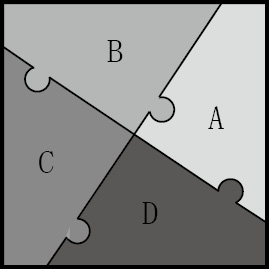
（2）D
本题有多种解法。我们可以将所有分数通分，用630作为公分母。于是，
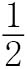
变成了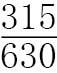
，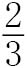
变成了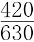
，以此类推。我们也可以将这些分数全部化为小数。此外，我们还有一个方法。由于所有分数的值都接近，所以我们可以通过各分数与的差来比较它们的大小。按照题目所给顺序，它们与的差依此为0、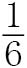
、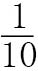
、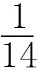
和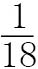
，所以这些分数按由小到大的顺序排列依次是、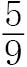
、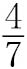
、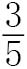
和。（3）C
字母“e”本来已经出现了8次，所以在空格中填入“nine”（9）或者“eleven”（11），句子均成立。
（4）B
在线条相交的地方，线条中断表示该线条是先画的，而没有断开的线条则覆盖在前者之上。因此，我们需要确定一条路线，使线条第一次通过交点时呈断开状，第二次通过同一交点时呈连续状。只有从B点开始向远离D点方向前进的路线才能满足这个条件。
（5）C
在所给选项中，23×34、56×67和67×78不能被5整除，它们可被排除。此外，34不能被4整除，而45是奇数，这表明34×45不能被4整除，该选项同样可以被排除。至此，我们还剩下最后一个选项，即45×56。分解质因数，45×56 = 23×32×5×7。很明显，这个数可以被1~10（含）的所有整数整除，因为表达式中已经包含了素数2、3、5和7，其他整数可以转换成这些素数的组合：4 = 22，6 = 2×3，8 = 23，9 = 32。
（6）B
如果红桃K说的是真话，梅花K说的就是假话，这意味着方块K说的是真话，而黑桃K说的是假话。反之，如果红桃K说的是假话，梅花K说的就是真话，这意味着方块K说的是假话，而黑桃K说的是真话。在这两种情况下，我们都可以断定说谎的人有两个，尽管我们没有办法确定到底谁在说谎。
（7）B
我们来看立方体的各个顶点，每三个面共用一个顶点，每两个面共用一条边。因此，这三个面需要涂成3种颜色。由于相对的两个面没有公共边，所以可以将它们涂成相同的颜色。这样一来，3种颜色就足够了。
（8）B
设我现在的年龄是x，则祖母的年龄是4x。5年前，4x – 5 = 5(x –5)。化简后可得x = 20。因此，祖母今年80岁，我20岁。
（9）B
因为所给数字通过加或减的方式，就可以得到一个末位为0的数，所以我们可以把视线放在这些数的末位数上，它们分别是3、5、7和9。我们发现，第一个数的末位数是3，是正数。我们知道3 + 7 = 10，但是5和9无法组合出末位数是0的数。因此，我们只能选择3 – 7。也就是说，算式中的67前面必须是一个减号。于是，我们有123 – 67 = 56。也就是说，我们需要将45和89组合，得到44，才能使最终结果为100。要实现这个目标，唯一的办法是用89减去45。因此，正确的算式是123 – 45 – 67 + 89，其中包含两个减号、1个加号，所以p – m等于– 1。
（10）A
如下图所示，我们可以拼凑出本题要求的瓷砖图案，因此黑白瓷砖的数量之比是1∶1。
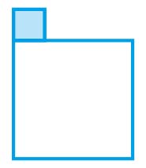